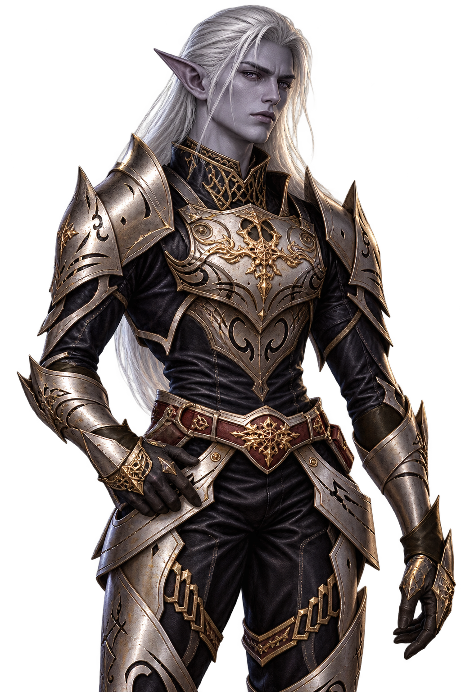

LOOK / 01
DOOM LIGHT
둠 경갑 · 다크엘프 남성
원작 얼굴과 은백색 헤어를 담은
리니지2 둠 경갑 외형.
함께하는 모험을 위한 모드와 외형.
한 번의 준비로, 우리의 세계를 더 편리하게.
① 앱 설치 → ② 통합팩 추가. 이후 업데이트는 Ghost r2에서.



위의 전용 앱 설치로 ZIP을 받고,
압축 해제 후 INSTALL_GHOST_R2.cmd를 실행하세요.
Ghost r2에서 게임과 플랫폼을 고르고
사용할 프로필을 여세요. 기존 프로필도 사용할 수 있습니다.
통합팩 설치로 앱을 열어 설치한 뒤,
Ghost r2의 Start modded로 실행하세요.
이미 이용 중이라면 앱에서 통합팩 업데이트만 받으세요. 친구도 같은 버전으로 맞추면 됩니다.
접속하면 외형이 자동으로 해금됩니다.
Tab → 외형에서 부위별로 선택하세요.
원작 얼굴과 은백색 헤어를 담은
리니지2 둠 경갑 외형.
검은 갑주와 야수의 투구,
움직임을 따라 흐르는 망토.
백골 갑옷과 해골 투구,
독립된 망토 외형과 천 물리.
둠 머리는 다크엘프 얼굴·귀·헤어를 함께 표시합니다. 머리 외형을 해제하면 기존 발헤임 얼굴·헤어로 돌아옵니다. 광전사와 해골기사는 각 세트의 투구를 사용합니다.
광전사·해골기사 망토는 상의와 별개입니다. 외형 창의 망토 부위에서 따로 골라 주세요. AnimateCapes로 천 물리를 켜거나 끌 수 있습니다. 둠에는 망토가 없습니다.
Original 체형의 전체 크기는 OriginalScaleDoom, OriginalScaleBerserker, OriginalScaleSkullKnight로 조절합니다. 서로 다른 게임의 단위 변환 배율이며, 원작 공식 신장과 같은 값은 아닙니다.
실제 장비 능력치는 유지합니다. 이미지는 프로모션 아트이며 게임 화면과 다를 수 있습니다.
Original 모션 정지 대응 / 원작 비율·개별 크기 배율 / 독립 망토·천 물리 / 홈페이지 구성 정리
사이트의 배포 정보입니다. PC에 설치된 버전은 Ghost r2에서 확인하세요.
필요한 기능을 검색해 보세요.
모드를 선택하면 사용 방법과 설정을 볼 수 있습니다.